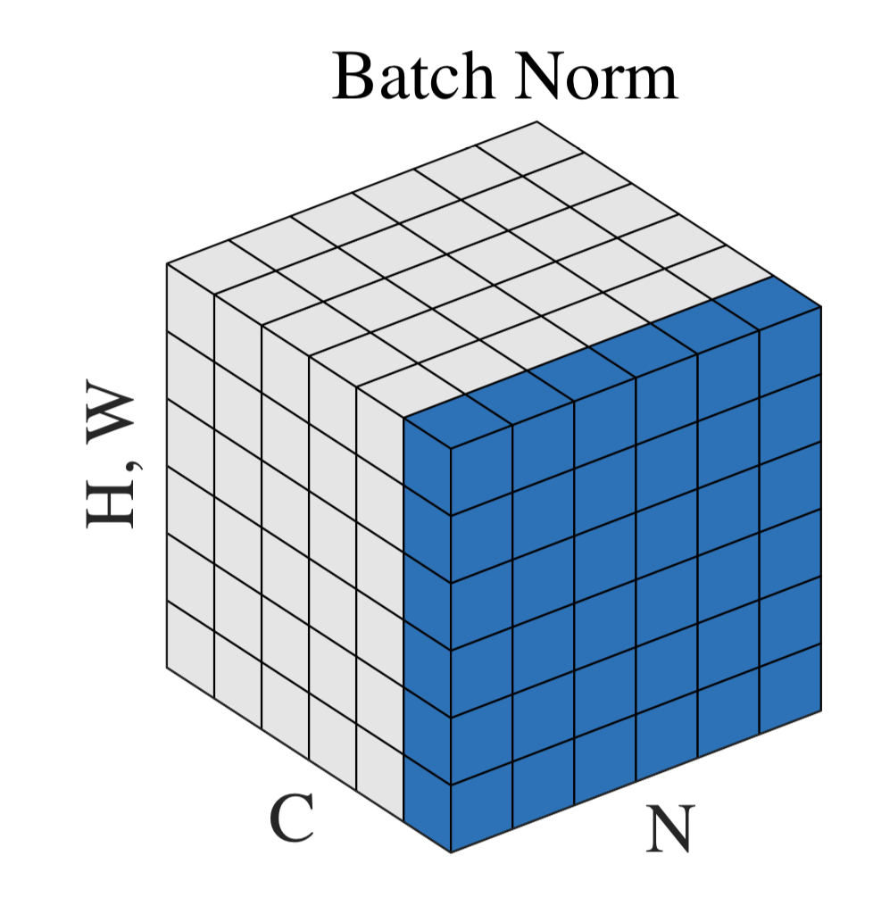
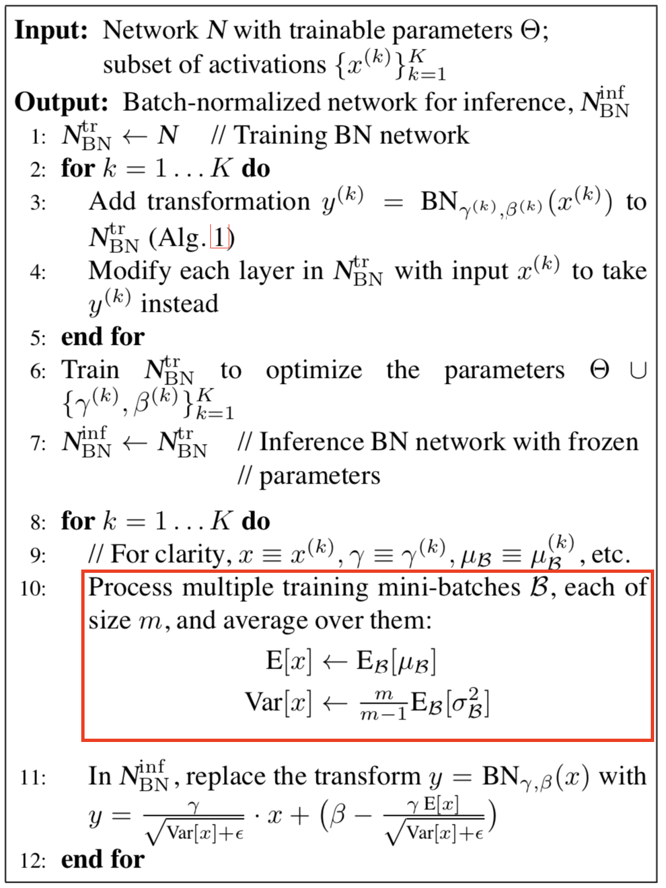
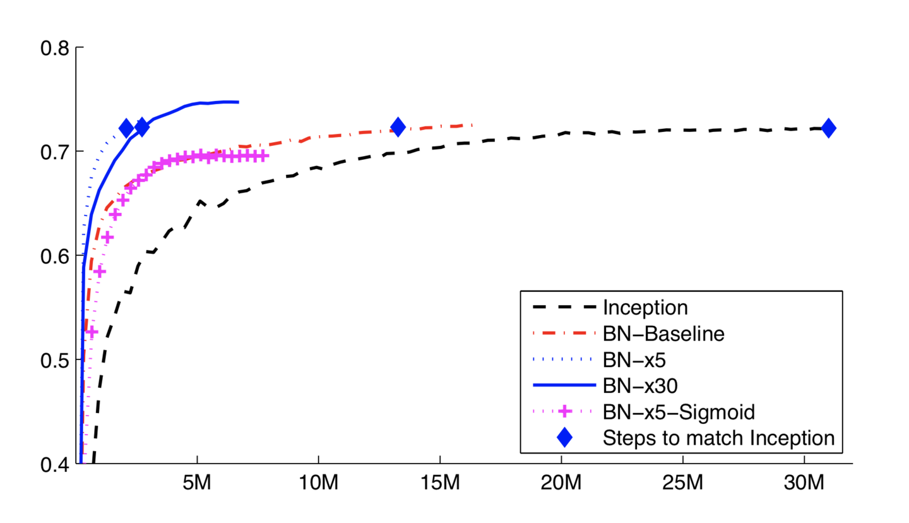

BN（Batch Normalization）
一、什么是BN？
Batch Normalization是2015年一篇论文中提出的数据归一化方法，往往用在深度神经网络中激活层之前。其作用可以加快模型训练时的收敛速度，使得模型训练过程更加稳定，避免梯度爆炸或者梯度消失。并且起到一定的正则化作用，几乎代替了Dropout。
二、BN核心公式是什么？
如下：
解释一下上述公式：
- 输入为数值集合（ $B$ ），可训练参数 $\gamma$、$\beta$ ；
- BN的具体操作为：先计算 $B$ 的均值和方差，之后将 $B$ 集合的均值、方差变换为0、1（对应上式中 ）$\tilde{x}_i\leftarrow\frac{x_i-\mu_B}{\sqrt{\sigma_B^2+\epsilon}}$，最后将 $B$ 中每个元素乘以 $\gamma$ 再加 $\beta$，输出。 $\gamma$、$\beta$ 是可训练参数，参与整个网络的BP；
- 归一化的目的：将数据规整到统一区间，减少数据的发散程度，降低网络的学习难度。BN的精髓在于归一之后，使用 、 作为还原参数，在一定程度上保留原数据的分布。
三、BN中均值、方差通过哪些维度计算得到？
神经网络中传递的张量数据，其维度通常记为[N, H, W, C]，其中N是batch_size，H、W是行、列，C是通道数。那么上式中BN的输入集合 就是下图中蓝色的部分。

图一 BN输入维度示意图
均值的计算，就是在一个批次内，将每个通道中的数字单独加起来，再除以 。举个例子：该批次内有10张图片，每张图片有三个通道RBG，每张图片的高、宽是H、W，那么均值就是计算10张图片R通道的像素数值总和除以 ，再计算B通道全部像素值总和除以，最后计算G通道的像素值总和除以。方差的计算类似。
可训练参数 、 的维度等于张量的通道数，在上述例子中，RBG三个通道分别需要一个 和一个 ，所以 、 的维度等于3。
四、训练与推理时BN中的均值、方差分别是什么？
此问题是BN争议最大之处，正确答案是：
训练时，均值、方差分别是该批次内数据相应维度的均值与方差；
推理时，均值、方差是基于所有批次的期望计算所得，公式如下：
其中 表示 x 的期望。
为了证明正确性，贴上原论文中的公式：

图二 BN在训练与推理中的详细计算步骤
五、在tensorflow中如何实现BN？
如果使用tensorflow的slim框架，BN就已经集成在内了，直接打开相应的参数即可。如果调用tf.nn.batch_normalization这个接口，那么需要自己在外部做一些事。
下述代码是基于tf.nn.batch_normalization封装好的BN函数：
1 | import tensorflow as tf |
在代码实现中有一个技巧，如果训练几百万个Batch，那么是不是要将其均值方差全部储存，最后再计算推理时所用的均值和方差？这样显然太过笨拙，占用内存随着训练次数不断上升。为了避免该问题，上述代码使用了滑动平均，储存固定个数Batch的均值和方差，不断迭代更新推理时需要的 与 。
注意到代码中：
- beta、gamma在训练状态下，是可训练参数，在推理状态下，直接加载训练好的数值。
- moving_mean、moving_var在训练、推理中都是不可训练参数，只根据滑动平均计算公式更新数值，不会随着网络的训练BP而改变数值；在推理时，直接加载储存计算好的滑动平均之后的数值，作为推理时的均值和方差。
六、在网络中使用了BN，效果如何？
BN目前仍然是一个黑盒，论文中有一定的理论推导，但是普遍还是通过对比提升来验证BN的效果。原作者给出的效果如下图：

图三 正确率（纵坐标）与训练步数（横坐标）
上图可见BN的两大收益：
- 收敛速率增加
- 可以达到更好的精度
在目标检测算法中，BN已经成为了标配。比如Yolov3引入了BN后，mAP提升了两个百分点。在更多实验中可以看到，BN同时起到了正则化作用，防止模型在训练集上过拟合，通常有BN的网络不再需要Dropout层。
参考
论文链接：Batch Normalization: Accelerating Deep Network Training by Reducing Internal Covariate Shift
更多归一化方法：BN、LN、IN、GN